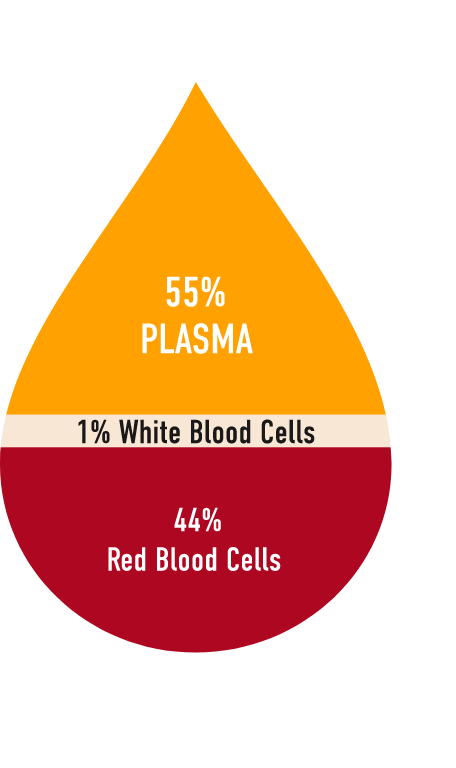

Donating plasma is a low-risk procedure with minimal or no side effects.
Here are the key steps:
-
Registration
Prospective donors show identification, enter their contact info, and take a photo and fingerprint scan so they can be entered into the donation center’s electronic system. A medical historian also checks the prospective donor’s name in a national registry to make sure they are eligible to donate. All identification and medical information is confidential.
-
Screening
All donors must pass a pre-donation screening at every appointment. First-time donors are interviewed about their medical history. Typical questions include medications, allergies, medical conditions, and surgeries. First-time donors will also undergo a routine health exam. The goal of this screening is to make sure that the donation is safe for both the donor and the recipient of the final product.
-
Donation Area
Once donation eligibility has been confirmed, donors are led to the donation area. Here, they rest on recliners while connected to an automated machine, and are carefully monitored by staff throughout the donation process. Donors are welcome to relax, read, or use free Wi-Fi to watch their favorite shows.
-
Plasma Donation
The safe and sterile process for donating plasma is called plasmapheresis (“plaz-muh-fuh-REE-sis”). It is similar to donating blood, except that plasma is separated and collected while red and white blood cells are returned to the body.
What is Plasma?
Plasma is the pale yellow liquid portion of your blood, and it can be easily replaced by your body. It consists mainly of water and proteins, which help your body control bleeding and infection.
How is Plasma Used?
Plasma is processed into a wide variety of life-saving treatments that help thousands of people every day. These plasma-derived therapies are used to treat serious and rare diseases, including primary immunodeficiency and hemophilia. It is important to remember that human plasma cannot be made in a lab or by artificial methods. It only comes from healthy adults. Plasma donors help save lives and treat serious and rare diseases.
This process is automatically repeated until a target amount of plasma has been collected, which typically takes less than an hour.
-
Compensation
Donors receive compensation for their time in the form of a debit card. Donors who qualify for the COVID-19 program will receive $200 for each visit, up to a total of $400 for two donations completed within 14 days.
BioLife Plasma Services has three Washington donation centers: Bellingham, Lacey, and Pasco. You can learn more about them, and ask questions about donor eligibility and other topics, by calling 1-877-TAKEDA-7 (1-877-825-3327 ).
To learn more about plasma-derived therapies and plasma donation, you can visit DonatingPlasma.org (sponsored by the Plasma Protein Therapeutics Association) or BioLifePlasma.com (part of Takeda).
Thank you for learning more about plasma donation!
Your Plasma Is Needed Now
If you have recovered from COVID-19 recently, your plasma may have the power to help others through a potential treatment for the new coronavirus.
By donating your plasma, a part of your blood that contains proteins and antibodies, you could play a key role in helping scientists develop an investigational plasma-derived therapy for treating high-risk COVID-19 patients that will be tested in clinical trials this summer. The results of these trials will determine whether the new therapy has the potential to treat high-risk COVID-19 patients and prevent pulmonary disease in people at increased risk of infection from the virus, including healthcare workers.
The fight against COVID-19 starts with you. You’re a survivor. Now be a hero. Learn more here about how you can be a part of this historic effort to treat the new coronavirus and stop the spread of the pandemic.